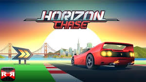

Horizon Chase Turbo is a racing game inspired by the great hits of the 80's and 90's: Out Run, Lotus Turbo Challenge, Top Gear (SNES), Rush, among others. Each curve and each lap in Horizon Chase Turbo recreates classic arcade gameplay and offers you unbound speed limits of fun. Full throttle on and enjoy!
Horizon Chase Turbo has Multiplayer Split Screen support across all game modes, to rescue the nostalgia of playing with your best friends sitting on a couch all night long. The hard time is to know who is your best friend because this one is also the one to be beaten.